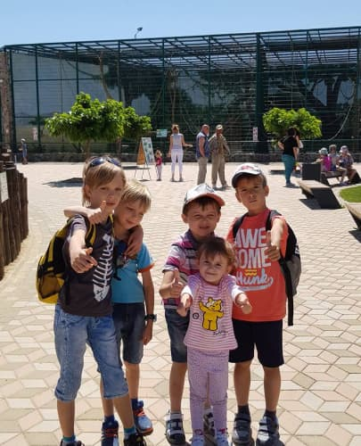
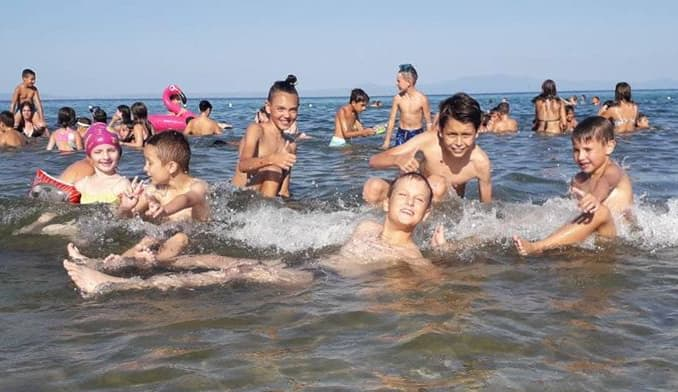
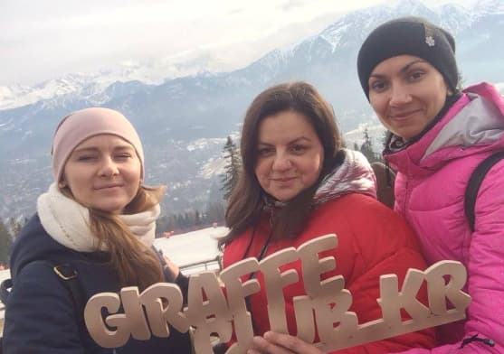
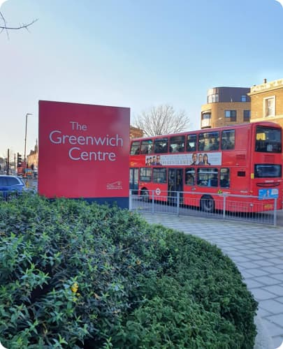
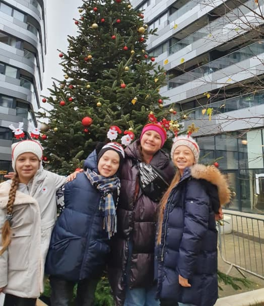
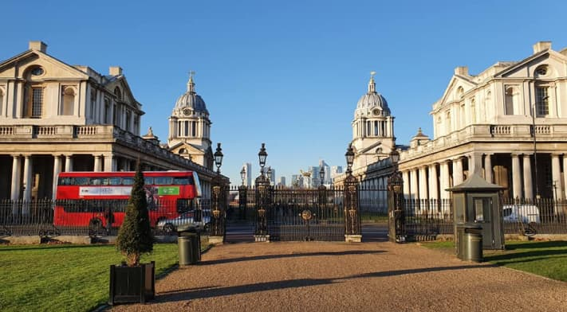
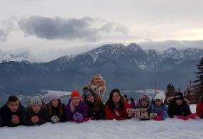
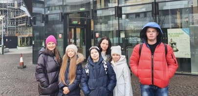
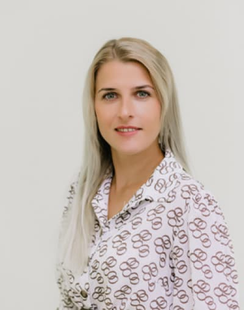
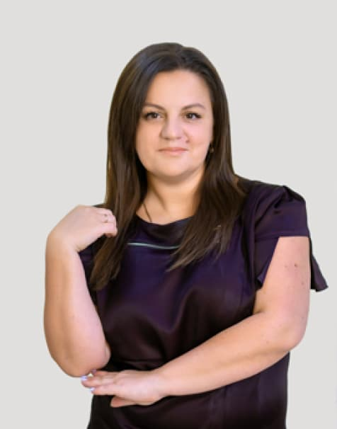

Giraffe Club
Офіційний сертифікований центр підготовки до міжнародних екзаменів Cambrige
Мовних шкіл багато - лідер один!
-
6 років успішної роботи
-
Сучасні програми й навчальні матеріали
-
Професійні викладачи
-
Переможець «Народний Бренд» (2018, 2019, 2020)
-
Топ партнер Cambridge Assessment English
-
Сотні наших випускників з високим рівнем
Що ти можеш у нас знайти?
-
Англійська для дітей від 1 року
-
Англійська для дорослих
-
Americanschool для школярів (1- 11 клас)
-
Підготовка до ЗНО
-
Підготовка до міжнародних екзаменів YLE, KET, PET, FCE, IELTS
-
Німецька для дорослих та дітей, віком від 3 років
-
Підготовка дітей до школи
-
Літній табір
Вивчення іноземної мови
-
У групах
-
У міні-групах
-
Індивідуально
-
Стандартний
Заняття 2 рази на тиждень тривалістю від 30 до 60 хв. (в залежності від віку).
-
Поглиблений
Заняття 3 рази на тиждень по 1 год. 20 хв. З Кембриджським іспитом на новий рівень в кінці навчального року.
-
Онлайн-курси
Можна обрати як стандартний, так і поглиблений формат та вивчати онлайн
Ми подорожуємо світом
Лондон, Греція, Болгарія, Польша, різні міста України.
Гарною традицією «GiraffeClub» стали освітні подорожі студентів в різні країни. Окрім вивчення англійської й покращення практичних навичок мови у спеціалізованих мовних центрах світу, програми поїздок передбачають щоденні розваги й екскурсії.
       Найкраща команда - найкращі результати
-

Валерія Звіранська
Адміністратор
-

Ольга Мануйлова
Засновниця школи.
Має вищу педагогічну освіту. Її профіль: германські мови. Перекладач.
Викладацький стаж: 22 роки
-
Наталія Шмалько
Адміністратор
Що кажуть про нас
Ольга Березовська
приватний нотаріус м.Кропивницький
Високий рівень викладання – викладачі прекрасні, професіонали своєї справи. Звернулися до Ольги до Жирафа Клаба за рекомендацією. Хочу особливо відзначити організованість, дисципліну, чіткість, гарний та зручний дизайн офісу. Враження лише позитивні, чудові, результат навчання – міжнародний сертифікат у дочки. Рекомендую.